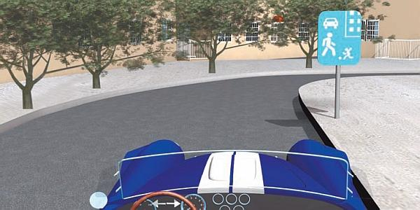
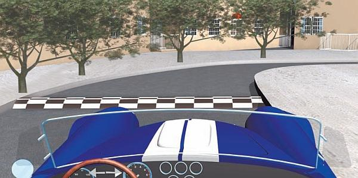
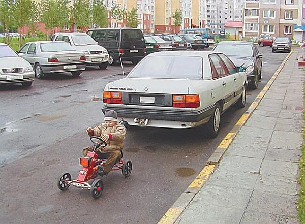

Особенности движения во дворах и жилых зонах.
Особая опасность и для водителей, и для пешеходов таится во дворах и жилых зонах. Напомним, что в соответствии с Правилами дорожного движения жилая зона – это территория, въезды на которую и выезды с которой обозначены дорожными знаками соответственно 5.21 «Жилая зона» и 5.22 «Конец жилой зоны» (рис. 3.6).

Рис. 3.6. Начало жилой зоны
На территории жилой зоны (кстати, правила движения в жилых зонах распространяются также и на дворовые территории) пешеходы имеют преимущественное право движения по отношению к механическим транспортным средствам, однако в то же время не должны создавать необоснованных препятствий для их движения.
В жилой зоне запрещаются сквозное движение, учебная езда, стоянка с работающим двигателем, а также стоянка грузовых автомобилей с разрешенной максимальной массой более 3,5 тонны вне специально выделенных и обозначенных знаками и (или) разметкой мест. При выезде из жилой зоны водители должны уступить дорогу другим участникам движения.
Характерной особенностью жилой зоны является не только то, что в ней пешеходы имеют преимущество, но и то, что в любой момент из-за любого угла на проезжую часть могут выскочить дети. Поэтому при движении в жилых зонах следует соблюдать предельную осторожность и не рекомендуется ехать со скоростью более 5 километров в час.
Кстати, одним из наиболее действенных способов повышения дисциплины водителей при движении в жилых зонах является повсеместное размещение в них искусственных препятствий, неофициально именуемых «лежачими полицейскими» (рис. 3.7). Причем размещать их следует чем чаще, тем лучше. В данном случае наверняка все водители в жилых зонах будут двигаться с минимальной скоростью если не из опасения за жизнь и здоровье находящихся поблизости людей, то хотя бы из-за страха повредить подвеску.

Рис. 3.7. «Лежачий полицейский»
Часто жертвами автомобилей в жилых зонах становятся домашние животные. Не секрет, что многие хозяева в своем дворе выпускают их гулять без поводка и беззаботное животное вполне может неожиданно выскочить прямо под колеса вашей машины. Несмотря на очевидное нарушение закона со стороны хозяина (домашних животных следует выгуливать на поводке), ответственность за происшедшее будет возложена на водителя.
В жилых зонах категорически запрещается парковать автомобиль таким образом, чтобы он перегораживал проезжую часть. Не стоит забывать, что кроме личного автотранспорта по двору двигаются транспортные средства специального назначения, например автомобили скорой помощи. Из-за перегороженной проезжей части они не смогут вовремя прибыть к месту назначения, что чревато трагическими последствиями.
Нередко в жилых зонах водители паркуют автомобили где попало: на газонах, тротуарах, заезжают чуть ли не на детские площадки и т. д. Это обусловлено, как правило, отсутствием достаточного количества мест для парковки (данный недостаток имеется у большинства российских дворов), однако в любом случае поступать так категорически запрещается.
Одним из наиболее распространенных видов нарушений правил движения в жилых зонах является превышение скорости. Учтите, если на обычной дороге (например, на стандартной городской улице или на загородной трассе) скорость 30–40 километров в час может показаться неоправданно малой, то в жилой зоне и во дворе ехать с такой скоростью чрезвычайно опасно: вы при всем желании не успеете отреагировать на внезапно появившуюся из-за препятствия (стоящей машины, угла) помеху, которой чаще всего является пешеход. От опыта и мастерства водителя в этом случае ничего не зависит. Известно немало трагических случаев, когда в жилой зоне опытный водитель не мог вовремя остановить автомобиль, движущийся со скоростью даже 10–20 километров в час. Еще раз напомним, что оптимальная скорость движения в жилых зонах и во дворах – не более 5 километров в час.
Характерной особенностью движения во дворах и жилых зонах является то, что многие водители, чтобы выехать с места парковки, начинают движение задним ходом. Не всем известно, что данный распространенный маневр таит в себе серьезную опасность. Дело в том, что сразу за задней частью автомобиля находится так называемая «мертвая зона»: водитель просто не видит, что там находится, ни с помощью зеркал заднего вида, ни оглянувшись.
Характерный пример: водитель садится за руль, заводит автомобиль, смотрит в зеркала и, не видя (а вернее, не замечая) препятствий, начинает движение задним ходом. Но за то время, пока он садился за руль и заводил машину, сзади к ней подошел маленький ребенок, которого водитель не видит, – ребенок находится сразу за машиной в «мертвой зоне» (рис. 3.8).

Рис. 3.8. Во дворе возле машины в любой момент может оказаться ребенок
К сожалению, данный пример порой находит трагичное подтверждение. Поэтому, начиная движение задним ходом, всегда будьте предельно внимательны и не ленитесь лишний раз удостовериться в том, что в «мертвой зоне» позади автомобиля никого и ничего нет.